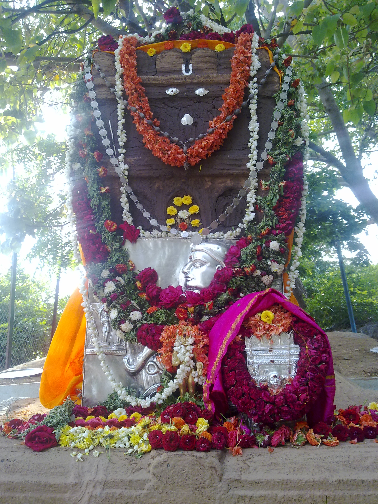

Akshayatrateeya Alankara at Bichali April 24,2012

(Click on the picture to download original resolution
)
Dear Devotees
- Please have the Punyakara Darshana of Bichali Japadakatti Ek
Shila Brindavana on the Eve of Akshaya Trateeya Gandha Lepana.
This
Vaibhava is conveying the divine message about our Kind Yatiraat Sri
Raghavendrateertharu's mode of protecting the world devotees with great
affection and concern. What little Seva, Pooja, Alankara, Japa we
perform and offer on this day of Akshayatrateeya to Sri Hari Vayu
Gurugalu will yield abundant endless AKSHAYA PUNYA PHALA. This is the
real meaning of the Aacharana of Akshayatrateeya. Daana as per the
Rutamaana(summer season) we have to do that will fetch great good
results to the Satvikas and the Devotees. Whatever may be the mode of
devotional activity that will become Akshaya, Vruddhi, Shuddhi
and Siddhi by the Anugraha of our Bhaktaanugraha Premi Mantralaya
Rayaru.